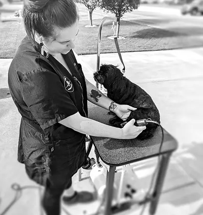
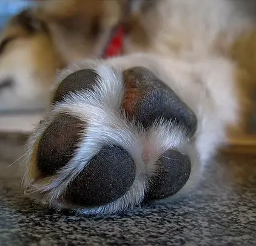

At Home
We bring the grooming experience to your dog rather than asking your dog to adjust to a busy salon or grooming van.
A Trainquil Effects Encounter
House-call grooming combines professional grooming, individualized products, and cooperative care in the comfort of your dog's own home.
Explore Services
House-Call Grooming
Trainquil Effects provides all-inclusive house-call grooming. Each visit is personalized around your dog's breed, coat, condition, behavior, and individual grooming needs.
We bring the grooming experience to your dog rather than asking your dog to adjust to a busy salon or grooming van.
Products and grooming decisions are selected according to your dog's skin, coat, grooming needs, and comfort.
Body language, responses, and comfort help guide the pace of the grooming process.
All-Inclusive Care
Trainquil Effects uses high-quality grooming products selected for each dog's coat and skin condition rather than treating every coat the same way.
Shampoo, conditioner, and grooming products are selected according to your dog's needs at the time of the appointment.
High-quality dehydrated beef liver treats may be used as rewards to help create positive associations with grooming.
Ear care, paw care, coat finishing products, and other details are incorporated according to the service being provided.
Full-service grooms finish with one of Trainquil Effects' hand-cut bandannas.
Grooming Services
Grooming care is selected according to your dog's breed, coat, condition, age, physical health, behavior, and individual grooming needs.

Full-Service Groom
A complete spa encounter combining personalized coat and skin care with a styled haircut designed around your dog's individual appearance and needs.

Full-Service Groom
Personalized bathing and coat care for dogs who do not need a complete haircut. Skin and coat condition are assessed so products can be selected for the dog being groomed.
A face, feet, and sanitary trim may be added for an additional fee.
Inquire About This Service
Between Full Grooms
A mini spa encounter designed to help keep your dog comfortable, tidy, and manageable between regular full-service grooming appointments.
A face, feet, and sanitary trim may be added for an additional fee.
Inquire About This Service
Focused Care
Focused nail and paw care designed to keep nails appropriately maintained while caring for the paw pads too.
Personalized Pricing
Pricing can vary based on factors including breed, coat type and condition, and the amount of time since your dog's previous groom.
Additional grooming or training needs may also affect the appointment. Contact Trainquil Effects for information specific to your dog.
Inquire About Pricing
More Than a Haircut
Trainquil Effects uses Fear Free and cooperative-care principles to help reduce fear, anxiety, and stress during grooming.
Body language and responses are watched throughout the appointment. Distraction, reinforcement, and pacing can be adjusted according to what the dog communicates.
New clients should plan for an initial meet-and-treat period so your dog has time to become familiar with the groomer before the grooming process begins.
Learn About Gabrielle's TrainingMaintaining the Groom
Regular grooming can help maintain coat condition and make grooming more predictable for your dog.
Trainquil Effects strongly encourages clients to maintain a grooming schedule of six weeks or less.
Poodles and doodles with curly coats kept at one-half inch or longer are required to maintain a schedule of six weeks or less to remain clients.
Clients are encouraged to pre-book at least two appointments ahead to maintain their grooming schedule.
A Tender Grooming Encounter
Tell us about your dog, their coat, grooming history, and individual needs to get started.